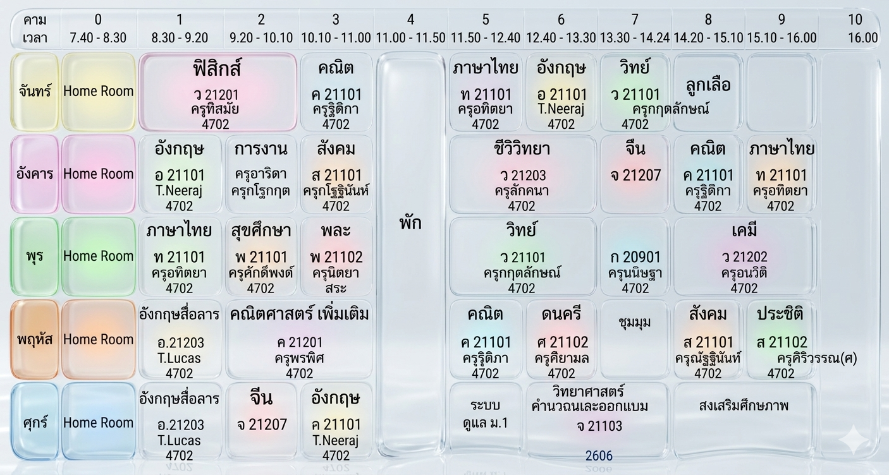

ยินดีต้อนรับ
เข้าสู่เว็บไซต์ศูนย์กลางข้อมูลของห้องเรียนพิเศษ HWN ม.1/11 คุณสามารถดูข้อมูลนักเรียน ติดต่อคุณครู และเช็คตารางสอนได้จากเมนูด้านล่าง
ประกาศล่าสุด
• ยินดีต้อนรับนักเรียนทุกคนเข้าสู่ภาคเรียนใหม่
• สามารถตรวจสอบตารางเรียนอัปเดตล่าสุดได้ที่เมนู "ตารางสอน"
ข้อมูลนักเรียน
พื้นที่สำหรับรวบรวมเอกสารประกอบการเรียน ใบงาน และผลงานต่างๆ ของนักเรียนชั้นม.1/11
กฎระเบียบห้องเรียน
• เข้าเรียนให้ตรงต่อเวลา
• แต่งกายให้ถูกระเบียบของโรงเรียน
• ช่วยกันรักษาความสะอาดในห้องเรียน
รายชื่อคุณครู
ทำความรู้จักและช่องทางการติดต่อคุณครูประจำวิชาต่างๆ ของห้องเรียน ม.1/11
ครูกฤตลักษณ์ (ครูบิว)
ครูแพร
ตารางสอน ม.1/11
สามารถใช้นิ้วเลื่อนซ้าย-ขวา เพื่อดูตารางสอนแบบเต็มๆ ได้เลยครับ

กรุณาบันทึกรูปตารางสอนเป็นชื่อ schedule.jpg แล้วนำมาไว้ในโฟลเดอร์เดียวกับไฟล์นี้